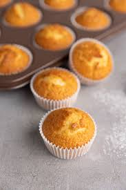

Bild
Zutaten
- 250 g Mehl
- 120 g Zucker
- 2 TL Backpulver
- 1 Prise Salz
- 2 Eier
- 250 ml Milch
- 80 ml Öl
- Optional: Schokostückchen
Zubereitung
- Backofen auf 180°C Ober-/Unterhitze vorheizen.
- Trockene Zutaten in einer Schüssel mischen.
- Flüssige Zutaten extra verrühren und dazugeben.
- Alles kurz mischen (nicht zu lange!).
- In Muffinform füllen und ca. 20 Minuten backen.
Tipp: Wenn du zu lange rührst, werden sie eher „Muffin-Steine“ 😂